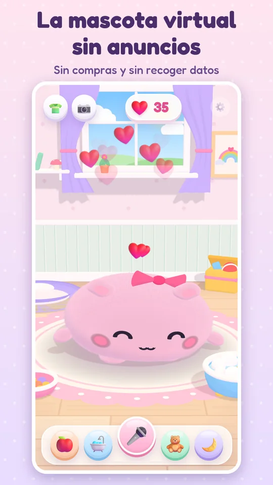
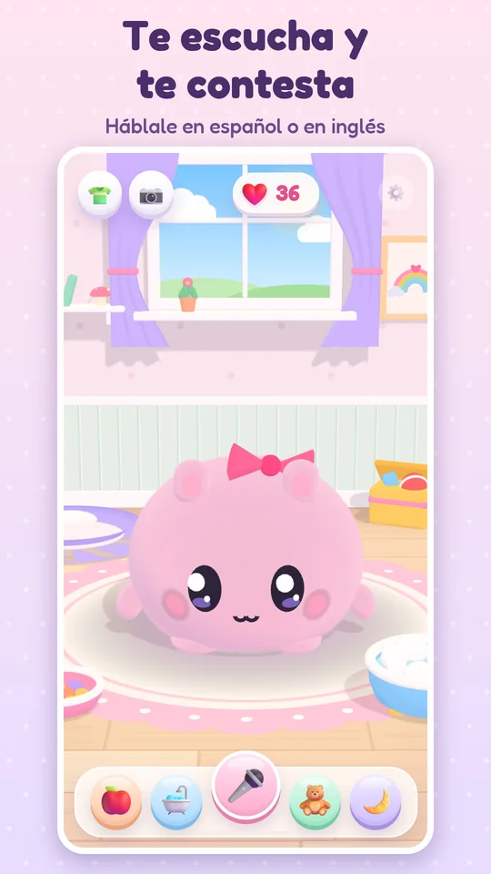
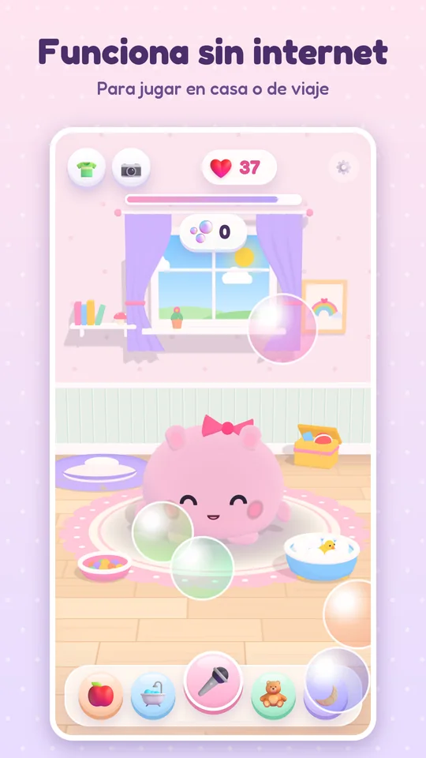
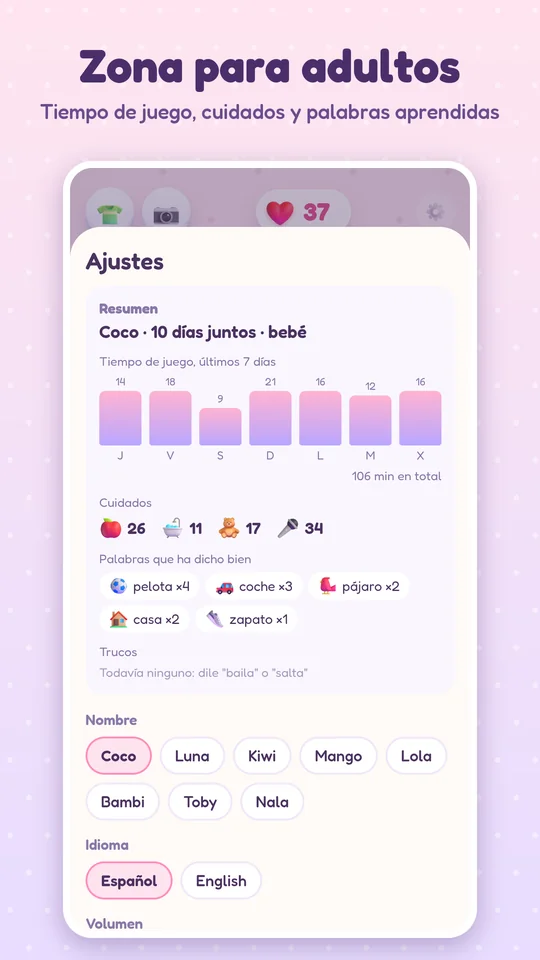

Ya en Google Play · Android
La mascota virtual sin anuncios
Fuwi es un mochi: una mascota en 3D para peques. La cuidas, la acaricias y te escucha, sin compras y sin internet.
Descargar en Google PlayPensada para los más peques
-
Sin anuncios ni compras
Nada interrumpe el juego y nada le pide dinero a tu peque.
-
Te escucha y te contesta
Entiende frases sencillas en español e inglés. La voz no se graba, no se guarda y no sale del móvil.
-
Funciona sin internet
Una vez instalada, se juega igual en casa que de viaje.
-
Nunca enferma ni muere
Si pasáis unos días sin verla, os recibe con alegría.
-
Casi sin texto
Todo funciona con dibujos y gestos, sin saber leer.
-
Zona para adultos
Protegida para los peques, con tiempo de juego, cuidados y palabras aprendidas.
Así es Fuwi




Descarga Fuwi
Fuwi es gratis y está en Google Play para móviles y tablets Android. Por ahora no hay versión para iPhone.
Cuéntanos qué tal
Si a tu peque le gusta, una opinión sincera en Google Play ayuda a que otras familias encuentren a Fuwi. También puedes escribirnos a akrogslabs@outlook.com.
Tus datos
Fuwi no recoge datos de tu peque: entiende la voz en el propio móvil y nunca la graba. Esta web no usa cookies ni estadísticas.
Dibujos para colorear
Dibujos de Fuwi gratis para imprimir, en casa o en clase. Descárgalos aquí.